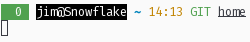

A couple months ago, I wrote about how I had started using Ansible for desktop configuration. I still do, but it's a bit more nuanced now than it was then. There's a few reasons why, but really the most important one was that making any sort of configuration change ended up being a huge hassle. Rather than making repeatable configuration easier, it made trivial fixes much harder. Let me explain.
Ansible is Still Great for This.
I briefly abandoned my Ansible configuration altogether. It felt like the right decision at the time, since Ansible is really meant for multiple server deployments rather than a single workstation, and a shell script can just as easily handle the workstation use case. However, as I continued using my machines, the package selection quietly started to diverge. Not only that, but it diverged significantly enough that as I swapped out unmaintained or only partially working tools in my scripts for better alternatives, some of my machines would appear to still be configured correctly, up until I would try to do something and it would silently fail.
Silent failures in scripts suck.
So now that I've introduced a couple of the problems I started to run into away from Ansible, let me introduce to you why I moved away from it. I'm not advocating sticking so closely to a playbook that you never let a machine deviate from it, but there are cases where it still is probably the best solution, in spite of the fact that I don't use it like I used to.
...Not Ansible?
You might think I just started using a shell script, but that's not quite it. I could have, and it would have solved some problems with diverging package configurations, since I maintain a separate file for every distro I use (Debian, Arch, Fedora, and Void at the moment). Although, in fairness, I could probably do better with this in Ansible, too. I just haven't yet.
I've mentioned a few times that I like to read other people's blogs, not just write my own. That's part of why I don't post roughly every other day anymore. So, when I was reading Drew DeVault's Blog, I ran across an article that piqued my interest. In this article, he details how he uses Git to manage his dotfiles. My first reaction was something along the lines of 'that'll never work', but as soon as I opened the article, I realized why it did.
His .gitignore file was the stroke of obvious genius I had been missing:
*
That's it. He just runs git add -f whenever he wants to add something, and Git ignores everything else.
I decided to try this out. I had just written my own article about Ansible at the time, and by the time I did I had already noticed some of the shortcomings I described a moment ago, so I decided to jump in and give it a try.
What Works
So, I will say that anything that's a static configuration file is now way easier to track. I'm not fumbling with random dotfiles that are old in the playbooks repository but are fixed to solve some issue on only one of my machines. That stuff isn't really a problem anymore.
Also, given my shell prompt includes Git integration, there was an easy way for me to see when I had changed something and needed to commit it to apply elsewhere. I was worried that this would be a problem, since the branch indicator is something that I use to see when I'm in a Git repo or not, but as it turned out naming my home repository's (only) branch to home essentially solved the issue. Now, rather than just read whether the branch name is there, I look to see whether it reads home, or something like stable like most of my code repos use. Here's what it looks like in my home folder:

When I change something and forget to commit it:
The number in red is the number of changed files.
I'll do an update on my prompt soon. There's a lot going on here that wasn't 5 years ago when I last posted about it. Also, yes, my terminal is always light mode.
There were also a few areas where I was much more willing to change things with the new system. I could easily apply a change to my mail system with a couple of Git commands, which was the push I needed to move away from running rsync on a bunch of maildirs to hosting my own IMAP server for holding archives. This means I can see my email archives on my phone without leaving them in the hands of Google and Microsoft and without using up limited storage space on their services.
One of the biggest pain points with Ansible was how slow it was to copy my Emacs configuration. I had basically copied a version of ~/.config/emacs wholesale into the playbooks' conf directory and let Ansible copy it to the real ~/.config/emacs on the target machine. This works, however, it works very, very slowly. I would walk away and do something else once it got to this step, and the fastest I remember it ever running was still somewhere between 5 and 10 minutes. All this for under a megabyte of data. Git, on the other hand, handles this instantly. I also am a lot more careful about what I add to the repository, which means the actual magnitude of stuff that gets ported from machine to machine is much more reasonable. It also means that if I run package updates in Elpa, old versions of the packages don't show up again from Ansible.
What Sucks
Ansible copied a few files that (as it turns out) got written to pretty frequently. I hadn't thought about it, but LMMS writes its recently opened files list to ~/.lmmsrc.xml and I don't really want that to persist across machines. I also don't want it getting overwritten every time I run the playbooks, though, so I opted to remove it entirely. In hindsight, this should have been obvious since I was kind of wondering why recents stopped sticking around, but whatever. I suppose this is just as much a positive as a negative, but now I have more things to set up by hand, lest I want to constantly be bothered by a changed file on every machine I use LMMS on.
I already mentioned package management, but needless to say, Git doesn't handle it at all.
Enrolling new machines also got a lot more complicated. I installed Void on one of my laptops, and while Void is great and I'm glad to have it around again, installing my configuration with Git took a few more steps and wasn't automated anymore. I hadn't written a Void playbook, I had just used a shell one-liner to convert the Arch packages playbook's package list into a regular list, edited the names where appropriate, then piped it with xargs into xbps-install. There were also a few steps like setting up WireGuard that I had to do by hand. I don't miss that.
I Went Back... Sort Of
So I didn't end up sticking with exactly that solution. Instead, I integrated the two.
The biggest advantage of this is that I get both the local configuration advantages of Git, and also the system-wide configuration that I had already written into Ansible. It also means that some of the custom-compiled software I use gets automatically compiled, just like it did when I was using pure Ansible.
However, I still have my ~ checked into Git, and I'm not changing that. So then the question becomes, how would you integrate the two?
Integration
So it's no secret that Ansible will fail a playbook if anything returns non-zero. This is actually a good thing, since it acts as a nice failsafe to stop you from accidentally forgetting to error-check some step which the next step builds upon. However, if we don't know yet whether the repository exists or whether we have to start fresh, the question becomes a little more complicated.
Furthermore, Git doesn't like to clone into a directory with files already in it, something we'll have to work around.
I could have designed a nice, Ansible-friendly solution to this, but instead I decided to fall back on my knowledge of Bourne shell and just script it. Here's what I came up with:
#!/bin/sh
clone_home()
{
cd /tmp
mkdir jim-makehome
cd jim-makehome
git clone homenas:/home/jim/git/home.git
mv home/.git ~/
cd ..
rm -rf jim-makehome
cd
git pull
}
if [ -e "/home/jim/.git" ]; then
cd
git pull
else
clone_home
fi
This detects whether the .git file/directory exists in ~ and either performs a simple git pull or creates the .git via a clone to an unrelated directory, then moves it into place and pulls on its own. The reason why .git can be a file is because that allows for Git worktrees, which I probably will never use here, but it makes sense to at least allow for them.
Moving Forward
This solution feels like the most correct one. Ansible is handling the system-wide stuff, which changes a lot less, and Git is handling my own configuration, catching me when I forget to commit something. The Ansible playbook I use is now massively faster, too, which means I could conceivably use it instead of manually invoking the package manager on whatever machine I'm on to run updates, which also means that I'll get updates alongside any new packages I decide to install.
To be clear, you could still do all of this with some shell scripts, and that's a totally valid approach. However, for me, I like this a lot. It solves the problem of repeatable configuration for me, and has given me a good introduction to where Ansible is great and where it's less great. I'll probably actually start using it for my home server soon, this time with a proper hosts table. However, for my own (frequently changing) dotfiles, it's better to use something like Git.